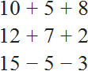
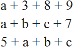
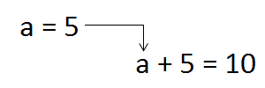
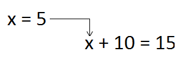

Выражение — это любое сочетание чисел, букв и знаков операций. Можно сказать, что вся математика состоит из выражений.
Выражения бывают двух видов: числовые и буквенные.
Числовые выражения состоят из чисел и знаков математических операций. Например, следующие выражения являются числовыми:

Буквенные выражения помимо чисел и знаков операций содержат ещё и буквы. Например, следующие выражения являются буквенными:

Буквы, которые содержатся в буквенных выражениях, называются переменными. Запомните это раз и навсегда! Спросите любого школьника что такое переменная — этот вопрос поставит его в ступор, несмотря на то что он будет решать сложные задачи по математике, не зная что это такое. А между тем, переменная это фундаментальное понятие, без понимания которого математику невозможно изучать.
Под словом «изучать» мы подразумеваем самостоятельное чтение соответствующей литературы и способность понимать, что там написано. А то вроде и знаешь математику на четвёрку, задачи решаешь, но не можешь понять, что написано в лекциях и книгах. Каждому знакомо такое чувство, особенно студентам.
Поскольку понятие переменной очень важно, остановимся на нём подробнее.
Посмотрите внимательно на слово «переменная». Ничего не напоминает? Слово «переменная» происходит от слов «меняться», «изменить», «изменить своё значение». Переменная в математике всегда выражена какой-то буквой. Например, запишем следующее выражение:
a + 5
Это буквенное выражение. Здесь одна переменная a. Поскольку она является переменной, значит может изменить свое значение в любой момент времени. Изменить значение может любой: Вы, Учитель, Ваш товарищ, кто угодно.
Например, давайте измéним значение этой переменной. Присвоим ей значение 5. Для этого запишем саму переменную, затем поставим знак равенства и запишем 5
a = 5
Что случится в результате этого? Значение переменной a, то есть 5 отправится в главное выражение a + 5, и подставится вместо a.

В результате имеем: 5 + 5 = 10
Конечно, мы рассмотрели простейшее выражение. На практике встречаются более сложные выражения, в которых присутствуют дроби, степени, корни и скобки. Выглядит это устрашающе. На самом деле ничего страшного. Главное понять принцип.
В учебниках часто встречаются задания следующего содержания: найдите значение выражения x + 10, при x = 5. Такие задания как раз и требуют, чтобы вместо переменной подставили её значение. Давайте выполним это задание. Значение переменной x равно 5. Подставляем эту пятёрку в исходное выражение x + 10 и получаем 5 + 10 = 15.

Переменная это своего рода контейнер, где хранится значение. Переменные удобны тем, что они позволяют не приводя примеров доказывать теоремы, записывать различные формулы и законы.
Вспомним второй урок «Основные операции». Чтобы понять сложение, мы привели пример 5 + 2 = 7 и сказали, что числа 5 и 2 являются слагаемыми, а число 7 — суммой. Но можно было понять эту тему и без примера, если бы мы воспользовались буквенным выражением. Обозначили бы слагаемые любыми буквами, например a и b, а сумму обозначили бы как с.
Тогда у нас получилось бы выражение с тремя переменными a + b = c, и можно было сказать, что a и b — это слагаемые, c — сумма.
И далее имея выражение a + b = c, можно пользоваться им, подставляя вместо переменных a и b любые числа. А переменная c будет получать своё значение автоматически, в зависимости от того какие числа будут подставлены вместо a и b
В качестве практики можете выполнить следующее задание. Дано выражение a + b = c. Найдите его значение, если a = 10, b = 6. Переменная c получит своё значение автоматически. Ответ запишите следующим образом: при a = 10 и b = 6, переменная c равна такому-то числу.
Решение:
a + b = c
10 + 6 = 16
Ответ: при a = 10 и b = 6, переменная c равна 16.
Значение выражения
Фраза «выполнить действие» означает выполнить одну из операций действия.
В учебниках младших классов часто можно встретить задания такого содержания: выполнить действия, и далее приводятся примеры, которые нужно решить. Когда перед нами подобное задание, мы сразу должны понимать, что от нас требуют решить пример. В народе это звучит как «решить пример«, но более правильно надо говорить «найти значение выражения». Решить пример и найти значение выражения это фактически одно и то же.
Например, если дано выражение 10 + 6, и от нас требуют найти значение этого выражения, это означает что нам нужно решить данный пример. Поставить знак равенства = и записать ответ:
10 + 6 = 16
Сумма 16, которая получилась в результате и называется значением выражения 10 + 6.
Значение выражения — это результат выполнения действий, содержащихся в выражении.
Рассмотрим еще примеры:
- 16 это значение выражения 4 × 4, поскольку 4 × 4 = 16
- 20 это значение выражения 10 + 10, поскольку 10 + 10 = 20
- 5 это значение выражения 10 ÷ 2, поскольку 10 ÷ 2 = 5